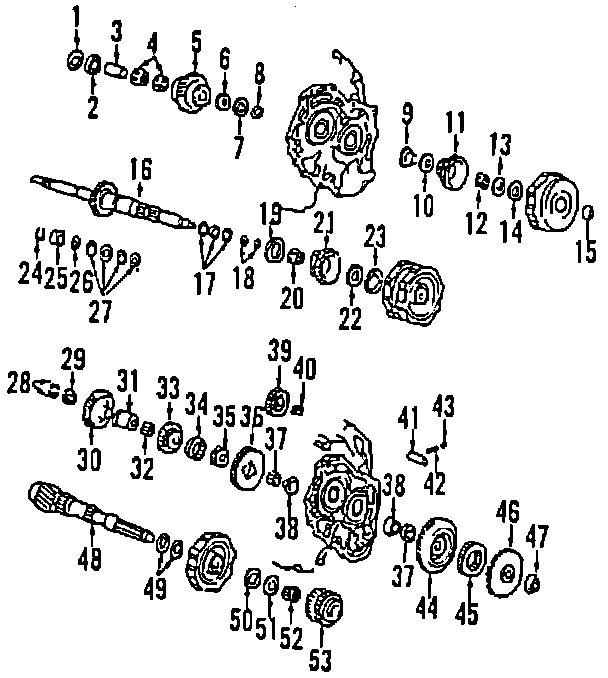
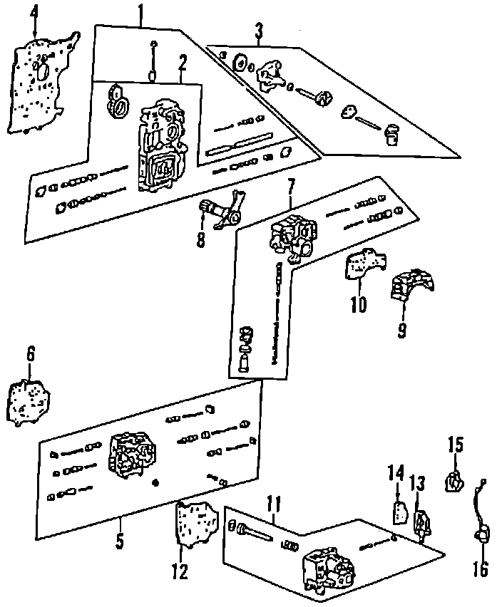
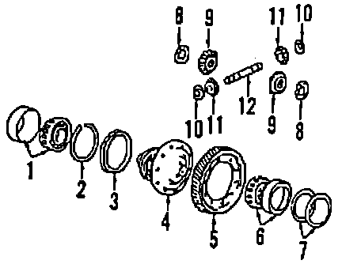
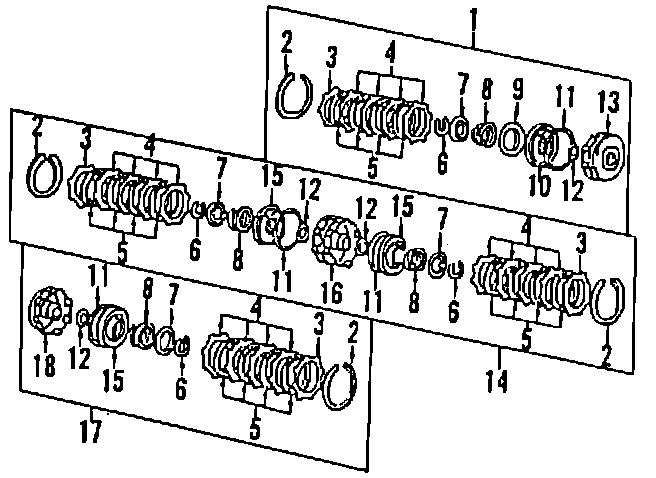

Operation CHARM
: Car repair manuals for everyone.
Home
>>
Acura
>>
1990
>>
Legend Coupe V6-2675cc 2.7L SOHC FI
>>
Parts and Labor
>>
Transmission and Drivetrain
>>
Automatic Transmission/Transaxle
>>
Images
Images
Case & Related Parts:
Gear Train:

Valve Body, Servo & Regulator:

Differential Gear:

Clutch:
